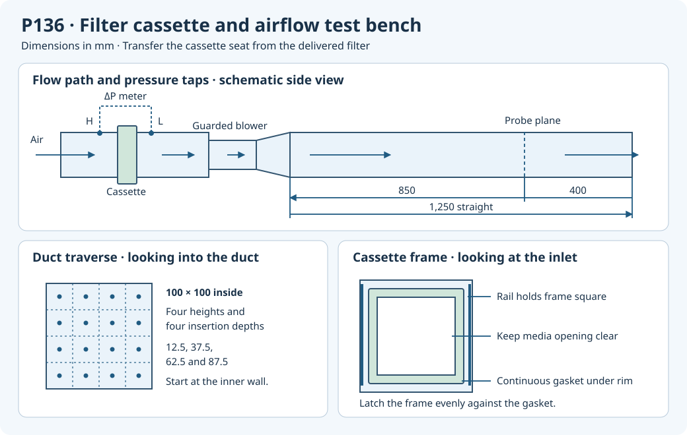
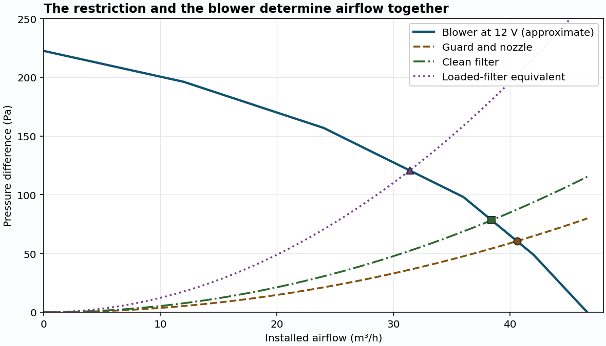

Build a low-voltage bench blower and particle-filter prototype
Build one 12 V test platform with two air paths: a guarded blower nozzle for clean bench work and a removable particle-filter cassette. Use measured airflow and supplier costs to judge which version is worth developing for your shop.

Photo by P199. Original photograph · Public domain.

Watch the measurement setup. In the first video, follow probe orientation and sample storage. In the second, see how two pressure connections measure the drop across a filter. TSI · Instrument set-up for a duct traverse · HVAC School · Static pressure and manometer basics.
Choose which customer problem to test
For the blower, start with directed cooling of an unpowered jig or a clean bench enclosure. For the filtration option, make a recirculating particles-only prototype for an ordinary indoor space. Give each its own airflow, noise, service and price target. Keep hazardous processes outside this prototype’s scope. Welding fume needs suitable source extraction and exposure controls. A bench jet can spread dust. EPA · Air cleaners · OSHA · Welding fume and gases.
For a training target, use at least 35 m³/h installed at the guarded nozzle, 35 m³/h with a clean filter and 30 m³/h at a simulated service restriction. Save the current and noise at those operating points. Ask customers which task takes time, what they use now and whether they can source the replacement filter locally. These targets are for screening a prototype.
Buy the blower parts, cassette and test equipment
Use the sourceable, guarded 12 V assembly from P133 as the starting hardware. Keep its intake and outlet guards in both test configurations. The worked model further down uses examples from a Delta curve, so use the NMB curve for a bench built with the P133 module. P133 · Exact blower, power parts and case drawings.
| Qty and part | Selection and fit | India source and price |
|---|---|---|
| 1 · Guarded blower and supply View blower | P133 specifies the NMB 09533GA-12M-AA-00 and external 12 V / 2.08 A adapter. A supply change calls for the same startup, wiring and protection checks. | See the P133 India buying table · NMB · Photo and specifications. |
| 2 · Framed filter samples View filter frame | Request a nominal 200 × 200 mm frame with about 45–50 mm depth if available. State the particulate efficiency target and request both price and clean pressure drop at 30, 35 and 45 m³/h. Use 20 Pa at 35 m³/h as an initial clean-filter pressure allowance for the worked example. Verify fit and flow on one sample before ordering replacements or a second lot. | Request a small custom-size quote and documentation. Sun Filtration, Chennai · Aerius, Faridabad. |
| 1 set · Duct, seat and taps View guard stock | 1 mm aluminium for the duct, external joining angle, two case rails, rigid mount plate, continuous 3 mm closed-cell gasket, two latches, two flush pressure taps, caps and matching tubing. Ask the fabricator to quote the long straight duct and tapered adapter separately. The blower carries its own guards. | Kanakratna · Aluminium sheet enquiry · Guard photo · Tahini, CC BY 2.0. |
| 1 · Hot-wire anemometer View velocity probe | Testo 405i, part 0560 1405, with a compatible device for readings. At 0–2 m/s, Testo quotes ±(0.10 m/s + 5% of reading). Borrow it or quote a calibrated equivalent with a slender probe and better low-speed accuracy when the results are close to the target. | Testo India · ₹19,175. |
| 1 · Differential manometer View pressure kit | Testo 510 kit, part 0563 0510, with two dry hose paths. At 0–30 Pa, quoted accuracy is ±3 Pa, with 1 Pa display resolution. Check the calibration and zero before use. | Testo India · ₹14,430. |


The two documented instrument prices total ₹33,605 as checked on 22 November 2026. Price the meters as shared shop equipment or borrow a calibrated set for the first measurement run. Confirm tax, delivery and calibration terms with the supplier.
Build the cassette and measuring duct


- Take the blower’s baseline voltage and running current through the guarded nozzle before adding the filter. Use a common outlet adapter to the same measuring duct for each configuration. Photograph and record the joints so the second bench run uses the same geometry.
- Dry-fit the cassette into a removable upstream plenum. Start with the inside distance between the rails 2 mm wider than the measured frame. Size the aperture to the clear media area and leave a full flat land for the gasket. Drill the seat and fit two positive latches to compress the gasket evenly. Close the cassette on a paper strip at each corner and along each side. Adjust the seat or latch if any section fails to grip the strip. Keep the cassette and blower guard independently attached.
- Put one pressure tap in a flat wall upstream of the filter and one downstream in the same-cross-section plenum, away from the fan inlet and turn into the blower. Drill and deburr each opening and seat each tap flush on the inside face. Run the hoses clear of the impeller and label H upstream and L downstream. Connect them to the corresponding gauge ports, then zero the gauge with both at the same pressure before measuring. Cap unused taps. DwyerOmega · Filter pressure connections.
- For a 100 × 100 mm clear duct, cut two 1,250 × 102 mm top and bottom blanks and two 1,250 × 100 mm wall blanks from 1 mm sheet. Trap the side walls between the caps. Use exterior angles and a continuous seal, with no protrusions in the flow path. Deburr, square and support the duct on two stable stands. Fit a gradual, sealed adapter between the guarded outlet and the straight duct. Measure the actual inside width and height after assembling.
- Mark the probe plane 850 mm after the straight duct begins, leaving 400 mm before the exit. Drill four side ports at heights of 12.5, 37.5, 62.5 and 87.5 mm from the inside base, sized to the probe and its removable seal. The equivalent diameter of the 100 mm square duct is about 113 mm by the method in the TSI note. Keep the exit clear and account for nearby obstructions if the setup changes. TSI · Traverse geometry and placement.
Predict and then measure installed airflow
The fan curve gives pressure that the blower can develop at each flow. The duct, guard, filter and enclosure demand pressure at that same flow. Their intersection sets the operating point. The Python calculation uses a few approximate readings from Delta’s 12 V curve and illustrative quadratic resistance curves. Run python3 airflow.py and compare the calculated results. These are predictions for example restrictions. Replace the example values with measurements before choosing a product fan. Greenheck · Fan and system curves.


- With the complete outlet flow collected, take four readings through each of the four ports at insertion depths of 12.5, 37.5, 62.5 and 87.5 mm from the inside wall. Orient the probe as specified for the normal flow component. Keep the other ports capped. Use the same settling and averaging time for all sixteen positions. Average the sixteen velocity readings and multiply by inside area and by 3,600. For a 100 mm square duct the factor is 36, so a mean of 0.97 m/s is about 35 m³/h.
- Log installed voltage, steady and peak current, all sixteen velocities, cassette differential pressure, case temperature and noise at a documented distance and background level. Check the baseline, clean cassette and clean restriction plate within the blower’s operating limits, then reseat the clean filter and repeat. Keep the existing guards in place. The pressure drop across the cassette differs from the model’s total system resistance.
- Repeat with two or more assembly builds and two filter lots. Track the lowest installed flow and highest noise, current and temperature. Use a marked filter lot or service threshold tied to measured airflow before deciding when to replace the filter.
At 35 m³/h in this duct, the 405i’s stated velocity tolerance alone is equivalent to about ±5.4 m³/h. Add uncertainty from flow profile, internal area, leaks and repeatability. If the uncertainty overlaps the target, record the test as inconclusive and repeat with a better calibrated setup. Use a test lab for product airflow claims. Testo · Velocity specification.
For a fixed particle size, a rough clean-air estimate is airflow × captured fraction. With 85% capture through the media and an assumed 4% unfiltered bypass, 38.42 × 0.85 × 0.96 is about 31.35 m³/h. Dividing by a 30 m³ room gives about 1.04 equivalent clean-air changes per hour under a well-mixed assumption. If the customer needs three, the target would be 90 m³/h. A laboratory assembly-level CADR test provides evidence for a product claim. The filter media label and free-air fan specification alone cannot establish it. EPA · DIY filter performance tests.
Work out the India pilot before ordering stock
| Illustrative small-batch cost | Rupees per filter unit |
|---|---|
| Blower, adapter, holder and two fuses | ₹4,670 based on P133 supplier listings |
| Filter, case and guards, remaining electrical parts | ₹550 + ₹790 + ₹700 assumed for the exercise |
| Assembly and checks, packaging, service reserve | ₹350 + ₹140 + ₹180 assumed for the exercise |
| Worked variable cost | ₹7,380 before any unbudgeted delivery or tax |
At hypothetical net receipts of ₹8,500 per unit after channel and shipping fees and excluding tax, the contribution would be ₹1,120 in this example. An assumed ₹55,000 in fixed tooling and test costs would take 50 units to recover. Replace the assumptions with landed quotes, measured labour, actual channel terms and a lab quote before pricing a pilot. Include spares and replacement filter availability.
Get the exact model classified before selling. The 2026 household, commercial and similar appliances Quality Control Order expressly includes DC and battery air purifiers in item 90 and specifies IS 302 Part 1. The BIS catalogue identifies IS 17531:2021 as the portable indoor purifier performance specification. Confirm the current safety standard, relevant order and implementation date with BIS for the finished assembly and its intended use. Get a separate classification for the blower. Treat the external adapter and the finished product as separate items when checking approvals. India Gazette · Appliances QCO 2026 · BIS · Current Scheme I list.
For the pilot record, keep a versioned BOM, per-unit test sheet, filter specification, warranty and spares plan. Check Legal Metrology retail-package declarations and CPCB applicability for your specific product and business. If the blower and filter cost too much for the measured benefit, use the same process on a local fixture, equipment bracket or replaceable enclosure that solves a confirmed customer problem. Department of Consumer Affairs · Legal Metrology · CPCB · E-waste scope.
P180 · Machine and measure a blower shaft fixture C19 · Compare the prototype with other work your shop customers need